Chorvatsko je ideální destinací pro milovníky slunce, moře a historie. Pobřeží Jaderského moře nabízí stovky ostrovů, z nichž každý má svou unikátní atmosféru. Dubrovník, známý jako „perla Jadranu“, láká na malebné uličky a historické hradby. Split nabízí kombinaci moderního života a antických památek, například Diokleciánův palác. Národní parky Plitvická jezera a Krka jsou rájem pro turisty a fotografy. Pláže v oblasti Makarské riviéry patří k nejkrásnějším v Evropě. Chorvatská kuchyně nabízí čerstvé mořské plody a tradiční speciality. Místní vinařství lákají na ochutnávky domácích vín. Aktivní turisté ocení pěší túry a cyklotrasy podél pobřeží. Města jako Zadar a Rijeka nabízejí kombinaci kultury a zábavy. Chorvatsko je bezpečné a přívětivé pro rodiny i páry. Díky kombinaci přírody, historie a pláží je to destinace vhodná pro všechny typy dovolené.
Split je skvělá letní destinace pro milovníky moře a slunce. Najdeš tu krásné oblázkové pláže s průzračně čistou vodou. Moře je zde ideální na koupání, šnorchlování i relaxaci. Nejznámější pláží je Bačvice, kde je mělká voda vhodná i pro méně zkušené plavce. V okolí města se nachází mnoho klidnějších zátok. Split je perfektní i pro výlety lodí na okolní ostrovy. Pobřežní promenáda je plná života a ideální na večerní procházky u moře. Letní atmosféra je zde velmi živá a energická.
od 17 990 Kč
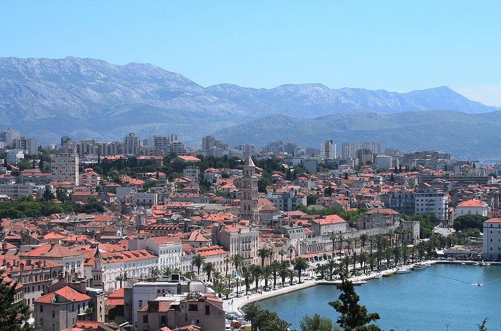
Brač je ideální destinace pro ty, kteří chtějí opravdu čisté moře a klid. Největším lákadlem je pláž Zlatni Rat, která mění svůj tvar podle větru. Voda je zde křišťálově čistá a perfektní na koupání. Ostrov nabízí spoustu menších pláží a skrytých zátok. Je ideální pro šnorchlování i vodní sporty. Díky větru je oblíbený mezi windsurfaři. Atmosféra je klidnější než ve velkých městech. Je perfektní pro odpočinkovou dovolenou u moře.
od 20 990 Kč
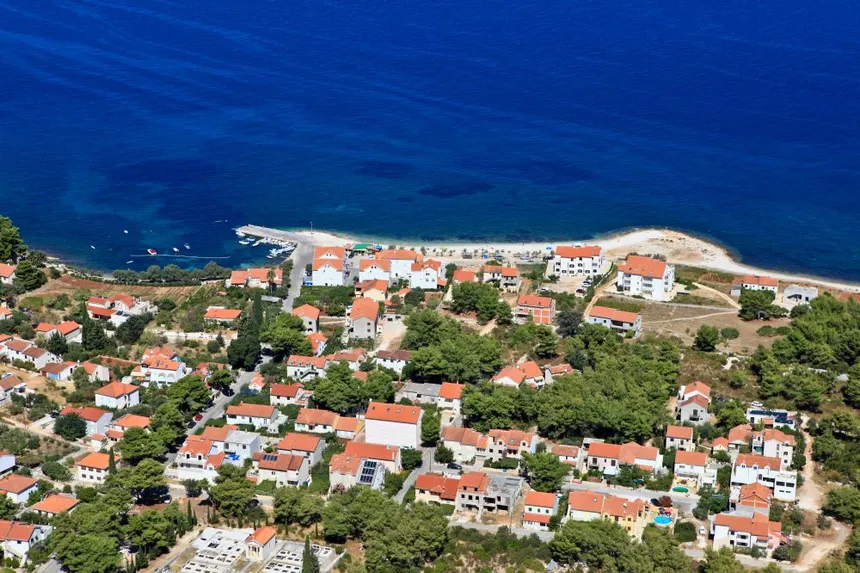
Istrie nabízí krásné pobřeží s čistým mořem a množstvím pláží. Najdeš zde kamenité i upravené pláže s pozvolným vstupem do vody. Moře je klidné a ideální pro koupání i rodiny s dětmi. Pobřeží je plné malých zátok, kde si můžeš užít soukromí. Istrie je skvělá i pro šnorchlování díky čisté vodě. Mnoho pláží je obklopeno borovicemi, které poskytují příjemný stín. Atmosféra je klidnější a pohodová. Je ideální pro relax u moře bez velkých davů.
od 18 990 Kč
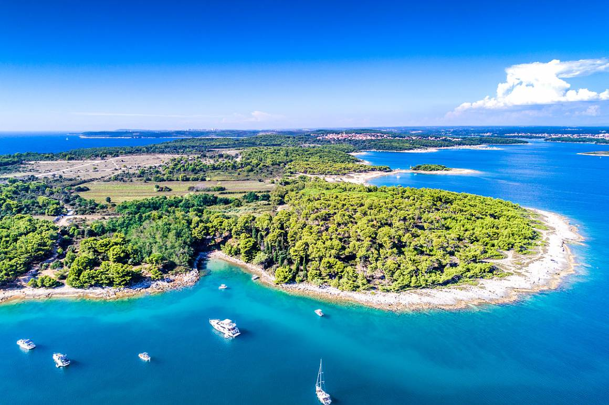
Slovinsko je malá, ale velmi rozmanitá země. Julské Alpy poskytují skvělé možnosti pro turistiku, horolezectví a lyžování. Jezero Bled a jeho ikonický ostrůvek s kostelem je jedním z nejfotogeničtějších míst v Evropě. Slovinské pobřeží u města Piran je malebné a klidné. Řeka Soča je rájem pro milovníky raftingu a kanoistiky. Ljubljana, hlavní město, nabízí historické centrum, hrady a živou kulturní scénu. Slovinsko je známé i svou gastronomií – sýry, víno a tradiční pokrmy potěší každého gurmána. Národní parky Triglav a Škocjanské jeskyně jsou ideální pro přírodu a dobrodružství. Země je bezpečná a snadno dostupná pro cestovatele. Slovinsko nabízí možnost aktivní i odpočinkové dovolené. Malá vzdálenost mezi památkami umožňuje stihnout více zážitků během krátkého pobytu. Krásná příroda, pohostinnost místních a čisté prostředí zaručují nezapomenutelný pobyt.
Koper nabízí příjemné koupání v klidnější části Jadranu. Pláže jsou spíše menší, ale dobře upravené. Moře je zde čisté a vhodné pro rekreační plavání. Najdeš tu i dlouhou promenádu podél pobřeží. V létě je zde příjemná a méně přeplněná atmosféra. Ideální je pro ty, kteří hledají klidnější dovolenou. Možnost koupání je přímo ve městě i v okolí. Skvělé místo na pohodový odpočinek u vody.
od 15 990 Kč
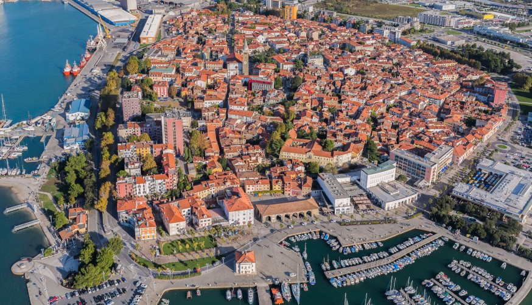
Piran je ideální pro ty, kteří mají rádi romantiku u moře. Pláže jsou menší a spíše kamenité, ale voda je velmi čistá. Skvělé podmínky jsou zde pro šnorchlování. Můžeš si užít koupání přímo u historického centra. Moře má krásnou modrou barvu a je klidné. Okolí nabízí i tiché zátoky pro relax. Večer je ideální na procházky podél pobřeží. Atmosféra je klidná a velmi příjemná.
od 20 990 Kč
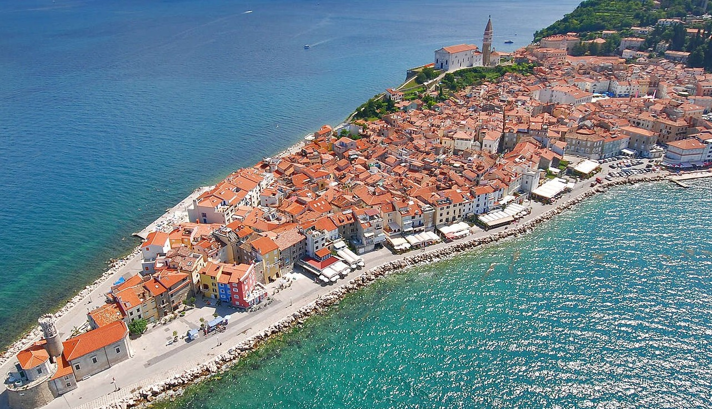
Portorož je jedno z mála míst v oblasti s písečnou pláží. Vstup do moře je pozvolný, což je ideální pro rodiny s dětmi. Pláž je dobře vybavená a pohodlná. Moře je klidné a vhodné pro dlouhé koupání. Najdeš zde i možnosti vodních sportů. Letní atmosféra je živá a plná zábavy. Večer ožívá pobřeží hudbou a lidmi. Je to ideální místo pro kombinaci relaxu a zábavy u moře.
od 17 990 Kč
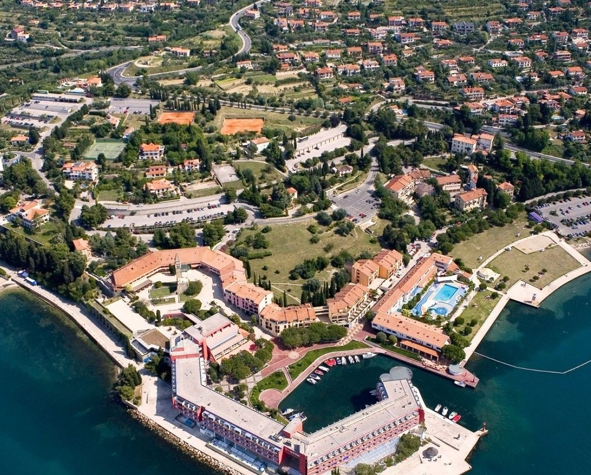
Albánie je stále méně známou turistickou destinací, což ji činí atraktivní pro cestovatele hledající autentičnost. Pobřeží Jónského a Jaderského moře nabízí krásné pláže a azurové moře. Města jako Berat a Gjirokastër jsou zapsána na seznamu UNESCO díky své historické architektuře. Albánské hory poskytují skvělé podmínky pro turistiku a trekking. Národní park Llogara nabízí dechberoucí výhledy na moře a pobřeží. Albánská kuchyně kombinuje středomořské a balkánské vlivy. Lokální trhy jsou plné čerstvých produktů a tradičních specialit. Albánie je cenově dostupná a stále ne tolik přeplněná turisty. Historické pevnosti a archeologická naleziště připomínají bohatou minulost země. Místní obyvatelé jsou velmi pohostinní a přátelští. Albánie je ideální pro kombinaci pláže, dobrodružství a poznávání kultury. Země nabízí neopakovatelnou směs krásné přírody a autentického zážitku.
Ksamil je známý svými nádhernými tyrkysovými plážemi. Voda je zde mělká, teplá a velmi čistá. Pláže připomínají exotické destinace. Můžeš si zaplavat i k malým ostrůvkům v okolí. Ideální místo pro dlouhé koupání a relaxaci. Moře je klidné a vhodné pro všechny věkové skupiny. Ksamil je perfektní na odpočinek u vody. Atmosféra je letní a pohodová.
od 16 990 Kč
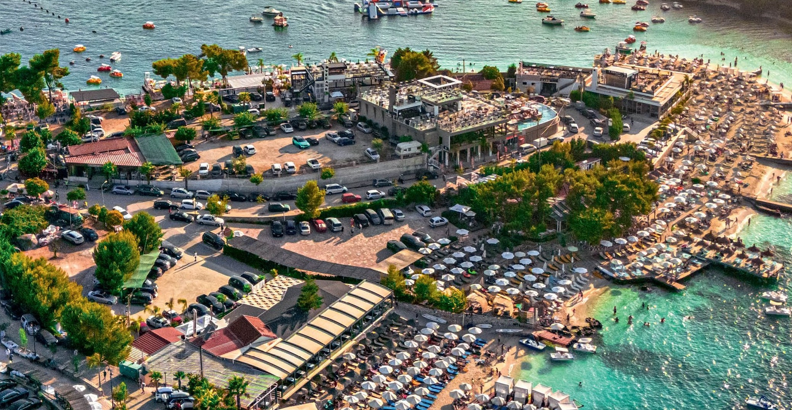
Drač nabízí dlouhé písečné pláže ideální pro letní dovolenou. Vstup do moře je velmi pozvolný, což ocení hlavně rodiny. Voda je teplá a vhodná na dlouhé koupání. Pláže jsou široké a nabízí dostatek prostoru. Najdeš zde i bary přímo na pláži. Možnost vodních sportů je samozřejmostí. Atmosféra je živá a plná lidí. Ideální místo pro klasickou letní dovolenou u moře.
od 20 990 Kč
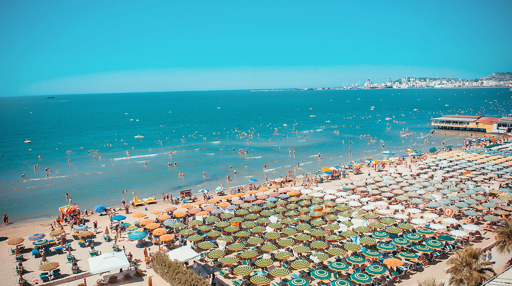
Sarandë je oblíbené letovisko na jihu Albánie s krásným výhledem na Jónské moře. Pláže jsou převážně oblázkové, ale voda je zde neuvěřitelně čistá a průzračná. Moře má krásnou tyrkysovou barvu a je ideální pro koupání i šnorchlování. V okolí najdeš i menší klidné zátoky. Sarandë je skvělé místo pro relax u vody. Pobřežní promenáda je plná restaurací a barů přímo u moře. V létě tu panuje živá atmosféra. Ideální pro ty, kteří chtějí kombinaci koupání a večerní zábavy.
od 18 990 Kč
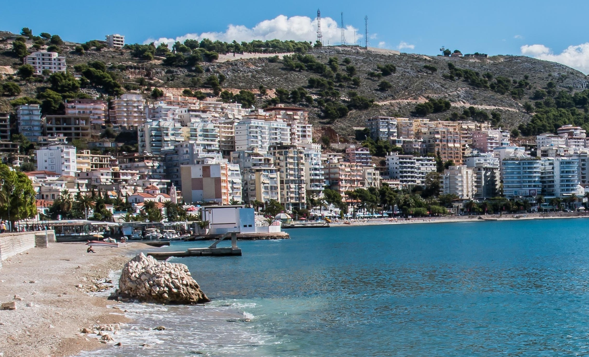
Itálie je destinací pro milovníky historie, umění, gastronomie i přírody. Řím je plný ikonických památek, jako je Koloseum, Forum Romanum či Vatikán. Florencie láká na renesanční architekturu a slavná muzea, například Uffizi. Benátky nabízejí romantické kanály a jedinečnou atmosféru města na vodě. Toskánsko je ideální pro ochutnávku vín a relaxaci na venkově. Amalfi pobřeží je malebné s útesy, azurovým mořem a kouzelnými městečky. Sicílie a Sardinie mají nádherné pláže a historické památky. Milán je světovou metropolí módy a designu. Italská kuchyně je světově proslulá – pizza, pasta, gelato. Národní parky, například Dolomity, lákají k pěší turistice a lyžování. Každý region nabízí odlišnou kulturu, jazyk a tradice. Itálie je destinace vhodná pro rodiny, páry i samostatné cestovatele. Je to země, kde historie a moderní život harmonicky spolupracují.
Neapol nabízí jedinečné koupání s výhledem na Vesuv a otevřené moře. Pláže jsou spíše menší, ale voda je příjemně teplá. V okolí města najdeš lepší pláže a koupací místa. Moře je ideální na osvěžení během horkých dní. Pobřeží má typickou středomořskou atmosféru. Skvělé jsou i výlety lodí na okolní ostrovy. Večer si můžeš užít příjemné posezení u moře. Neapol je vhodná pro ty, kteří chtějí město i moře zároveň.
od 22 990 Kč
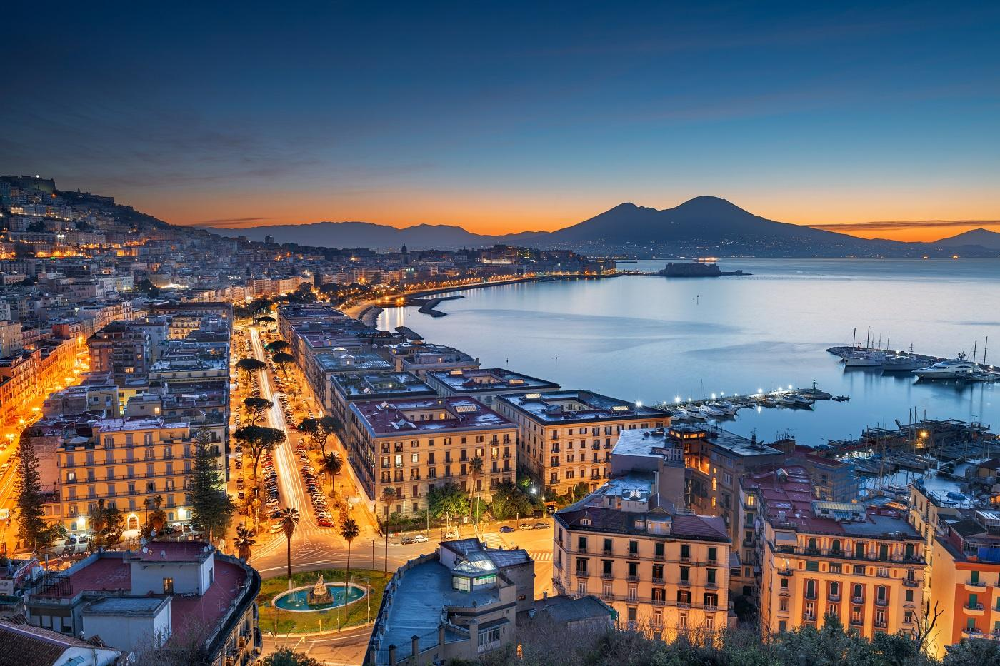
Sicílie nabízí jedny z nejkrásnějších pláží v Itálii. Najdeš zde písečné i oblázkové pláže s čistým mořem. Voda je teplá a ideální na dlouhé koupání. Pobřeží je velmi rozmanité a každý si najde své místo. Skvělé podmínky jsou zde pro šnorchlování. Mnoho pláží má pozvolný vstup do moře. Atmosféra je typicky letní a uvolněná. Ideální pro milovníky moře a slunce.
od 19 990 Kč
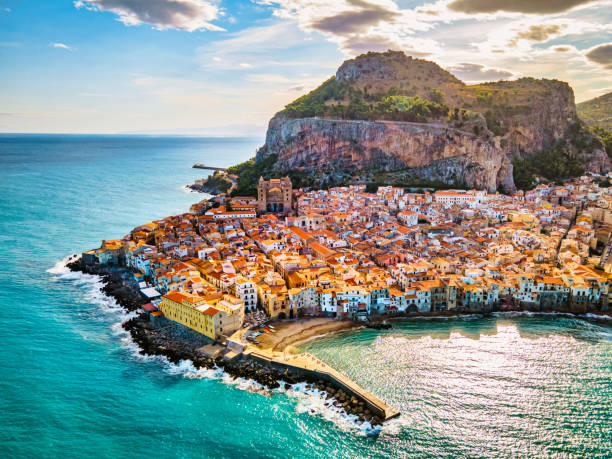
Sardínie je známá svými luxusními plážemi s bílým pískem. Moře má nádhernou tyrkysovou barvu a je extrémně čisté. Často bývá přirovnáváno ke Karibiku. Pláže jsou prostorné a méně přeplněné. Voda je ideální na koupání i šnorchlování. Najdeš zde i klidné zátoky mimo hlavní turistické oblasti. Atmosféra je velmi klidná a relaxační. Perfektní destinace pro odpočinek u moře.
od 20 990 Kč
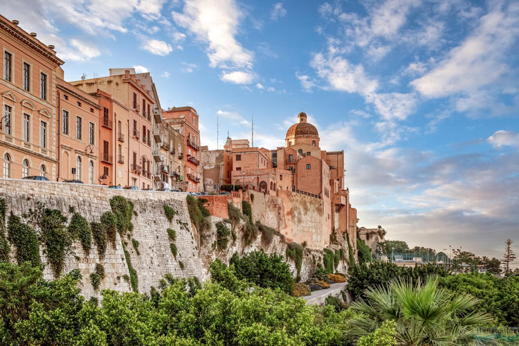
Španělsko nabízí kombinaci pláží, historie a bohaté kultury. Barcelona je známá architekturou Gaudího, živými ulicemi a tapas bary. Madrid láká na umělecké galerie, historické náměstí a noční život. Andalusie nabízí kouzelnou architekturu, například Alhambru v Granadě. Costa del Sol a Costa Brava mají slunné pláže a luxusní resorty. Kanárské ostrovy a Baleáry jsou ideální pro odpočinek, vodní sporty a turistiku. Španělská kuchyně je plná chutí – tapas, paella, sangria. Místní festivaly, flamenco a tradiční slavnosti nabízejí autentický zážitek. Národní parky, například Picos de Europa, lákají milovníky přírody. Španělsko je vhodné pro rodiny, páry i dobrodružné cestovatele. Země má přátelskou atmosféru a rozmanité možnosti ubytování. Historie, kultura a relaxace se zde dokonale prolínají. Španělsko je destinace, kam se lidé rádi vracejí.
Mallorca nabízí nádherné pláže s jemným pískem a čistým mořem. Voda je průzračná a ideální pro koupání. Najdeš zde jak živé pláže, tak i klidné zátoky. Moře je vhodné i pro vodní sporty. Pláže mají často pozvolný vstup do vody. Letní atmosféra je zde velmi živá. Ostrov je ideální pro všechny typy cestovatelů. Perfektní kombinace relaxu a zábavy u moře.
od 25 990 Kč
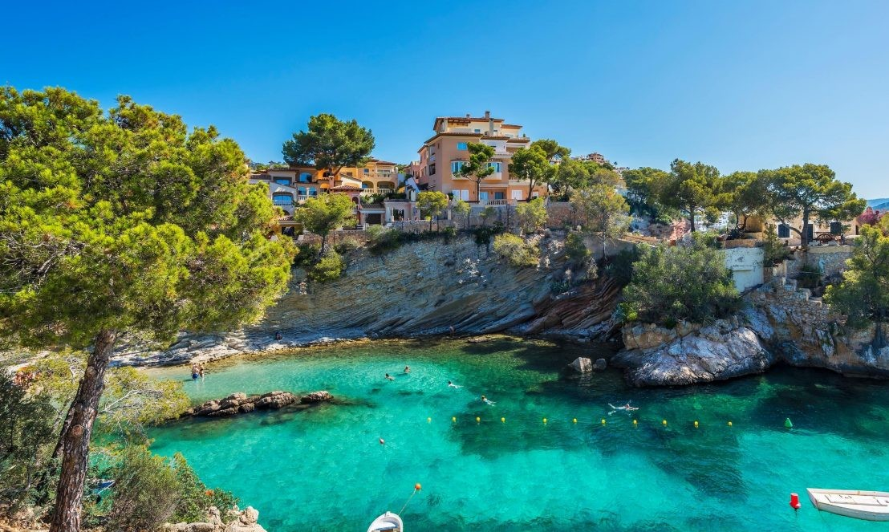
Tenerife nabízí jedinečné pláže s vulkanickým pískem. Moře je zde teplé po celý rok. Pláže jsou dobře vybavené a pohodlné. Najdeš zde i uměle vytvořené písečné pláže. Voda je ideální na koupání i surfování. Pobřeží nabízí krásné výhledy na oceán. Atmosféra je uvolněná a prázdninová. Skvělé místo pro milovníky oceánu.
od 28 990 Kč
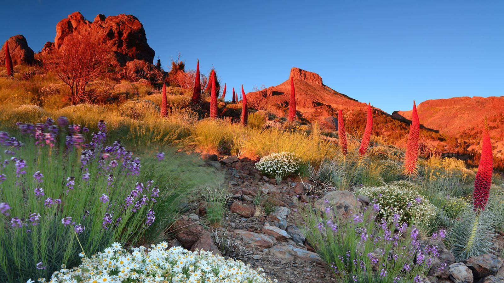
Valencie je známá svými dlouhými písečnými plážemi. Vstup do moře je pozvolný a bezpečný. Moře je čisté a ideální pro koupání. Pláže jsou široké a dobře udržované. Najdeš zde i plážové bary a restaurace. Atmosféra je živá, ale ne přeplněná. Skvělé místo pro letní relax. Ideální pro rodiny i páry.
od 21 990 Kč
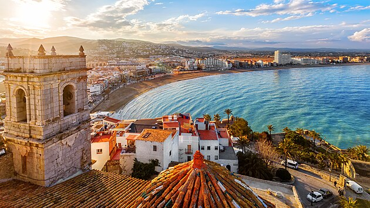
Portugalsko je země s bohatou historií, nádhernou přírodou a vynikající kuchyní. Hlavní město Lisabon je plné malebných uliček, historických tramvají a vyhlídek na řeku Tejo. Porto je proslulé svým portským vínem a starobylou architekturou. Algarve nabízí široké písečné pláže a romantické útesy. Sintra láká na paláce a zahrady zapsané na seznamu UNESCO. Portugalsko má příjemné klima, ideální pro celoroční cestování. Místní gastronomie nabízí čerstvé mořské plody, ryby a tradiční dezerty jako pastel de nata. Rybářské vesničky a pobřežní města mají kouzelnou autentickou atmosféru. Aktivní turisté si užijí surfování, pěší turistiku a cyklotrasy. Portugalsko je přívětivé pro rodiny, páry i samostatné cestovatele. Historie, příroda a pohostinnost místních zaručují nezapomenutelný zážitek. Země nabízí kombinaci relaxace na pláži a kulturního objevování.
Madeira nabízí koupání v Atlantiku s krásnými výhledy. Pláže jsou spíše kamenité nebo lávové. Moře je velmi čisté a osvěžující. Najdeš zde i přírodní bazény vytvořené z lávy. Ideální místo pro milovníky přírody a oceánu. Voda je vhodná i pro šnorchlování. Atmosféra je klidná a relaxační. Perfektní pro klidnější dovolenou.
od 31 990 Kč
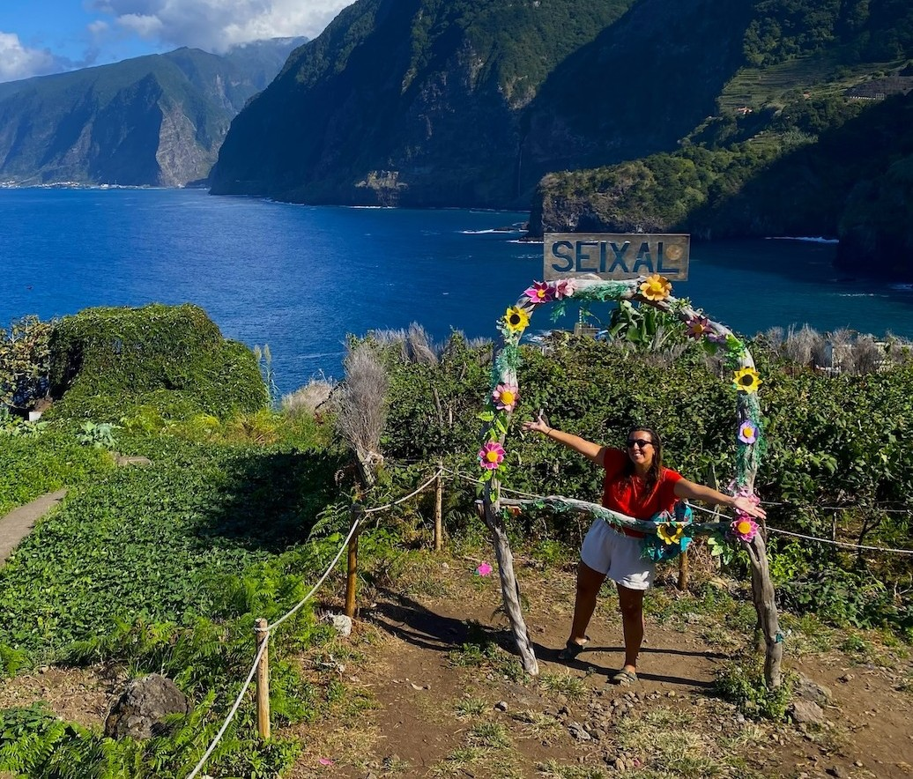
Faro je vstupní brána do oblasti Algarve s nádhernými plážemi. Najdeš zde dlouhé písečné pláže s jemným pískem. Moře je čisté a vhodné pro koupání. Vlny jsou ideální i pro surfování. Pláže jsou prostorné a méně přeplněné. Atmosféra je uvolněná a slunečná. Ideální místo pro milovníky oceánu. Perfektní na letní odpočinek.
od 22 990 Kč
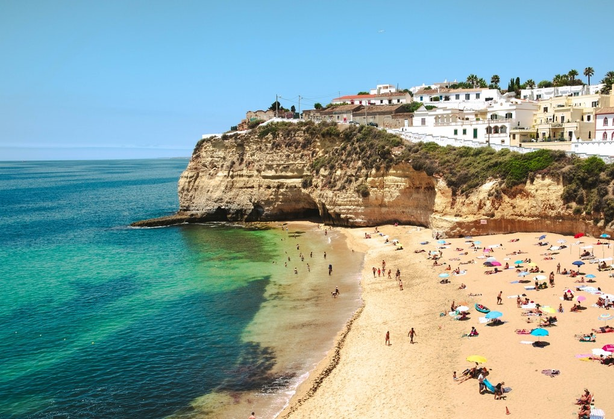
Lisabon nabízí kombinaci města a oceánu. V okolí najdeš krásné pláže s velkými vlnami. Moře je ideální pro surfování i koupání. Pláže jsou široké a písečné. Voda je osvěžující i v létě. Pobřeží má divokou a přirozenou atmosféru. Skvělé místo pro aktivní dovolenou. Ideální pro milovníky oceánu.
od 20 990 Kč
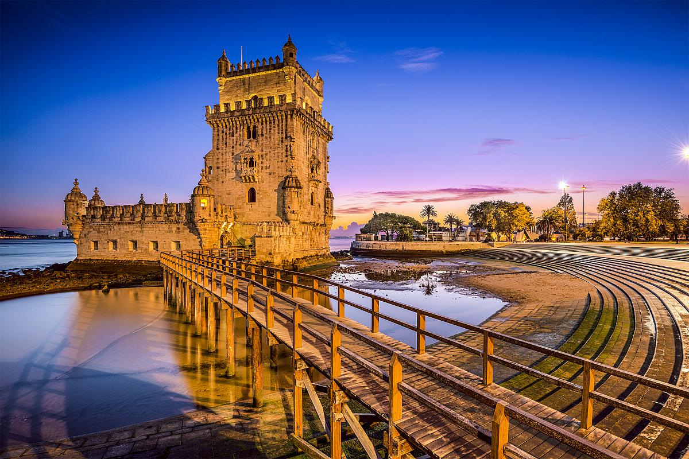
Francie je země s bohatou historií, kulturou a rozmanitou přírodou. Paříž je známá svými ikonickými památkami, jako je Eiffelova věž, Louvre a katedrála Notre-Dame. Azurové pobřeží nabízí luxusní pláže, malebná města a bohatý noční život. Provence a Alsasko lákají vinicemi, levandulovými poli a malebnými vesničkami. Lyon je gastronomickým centrem země a nabízí tradiční i moderní kuchyni. Francouzské Alpy poskytují skvělé podmínky pro lyžování a turistiku. Historická města jako Bordeaux, Toulouse a Nice mají jedinečnou atmosféru. Francie je známá svým uměním, architekturou a literaturou. Národní parky a přírodní rezervace lákají milovníky přírody a dobrodružství. Francie je vhodná pro všechny typy cestovatelů – od rodin po páry a samostatné turisty. Místní trhy a kavárny přinášejí autentické zážitky. Kombinace historie, kultury a přírody činí Francii jedinečnou destinací.
Nice nabízí krásné oblázkové pláže s typicky azurově modrým mořem. Voda je velmi čistá a ideální pro koupání. Pláže jsou dobře udržované a mají skvělou infrastrukturu. Najdeš zde i soukromé plážové kluby. Moře je klidné a příjemně osvěžující. Pobřežní promenáda je ideální na večerní procházky. Atmosféra je elegantní a letní. Skvělé místo pro pohodovou dovolenou u moře.
od 23 990 Kč
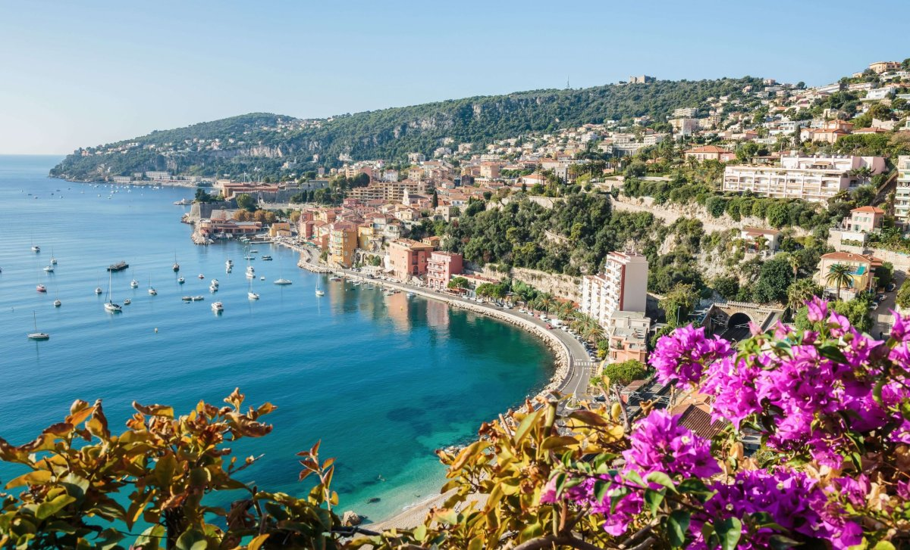
Marseille nabízí kombinaci městských pláží a krásných zátok. V okolí najdeš slavné Calanques s tyrkysovou vodou. Moře je zde velmi čisté a vhodné pro koupání. Pláže jsou různorodé – od písečných po skalnaté. Ideální podmínky jsou zde pro šnorchlování. Pobřeží má divoký a přírodní charakter. Atmosféra je živá a autentická. Perfektní pro milovníky moře a přírody.
od 25 990 Kč
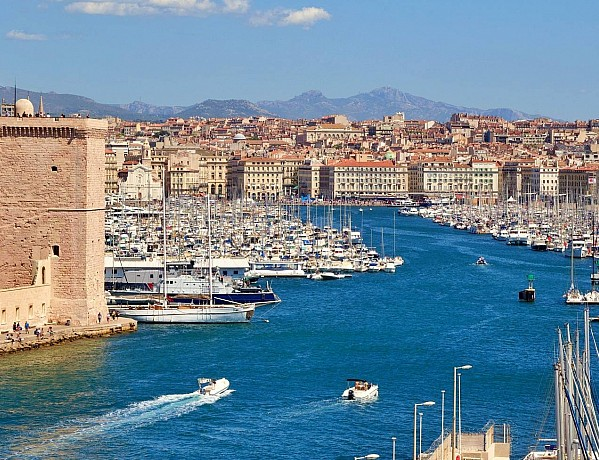
Tato oblast je známá svými dlouhými písečnými plážemi u Atlantiku. Moře zde nabízí větší vlny ideální pro surfování. Pláže jsou široké a často méně přeplněné. Voda je osvěžující i během horkých dní. Pobřeží má divoký a přirozený charakter. Ideální pro aktivní dovolenou u moře. Najdeš zde i klidnější místa pro relax. Atmosféra je svobodná a uvolněná.
od 19 990 Kč
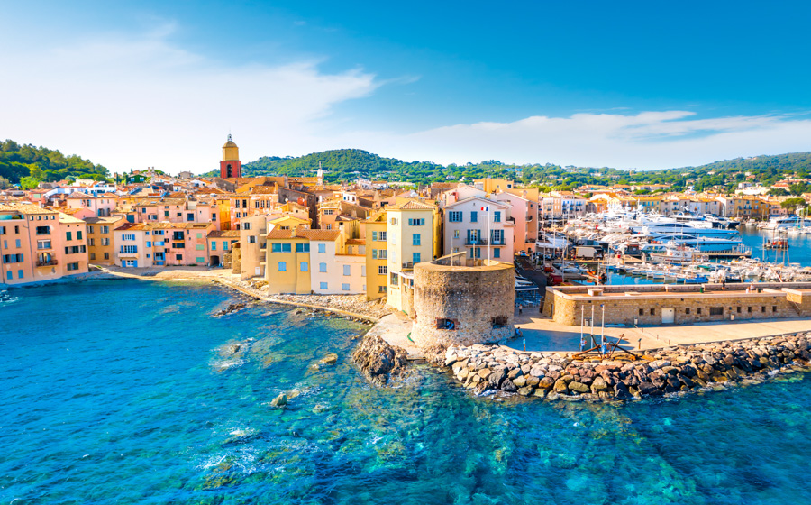
Bulharsko je oblíbenou destinací pro slunečné dovolené u Černého moře. Letoviska Slunečné pobřeží a Zlaté písky nabízejí písečné pláže a širokou nabídku hotelů. Sofie, hlavní město, je plné historických památek a moderních kaváren. Plovdiv láká na starobylé římské a středověké památky. Rila a Pirin nabízejí skvělé podmínky pro turistiku a zimní sporty. Bulharsko má bohatou folklórní tradici, hudbu a festivaly. Kuchyně zahrnuje čerstvé zeleninové a masové speciality, jogurt a sýr. Národní parky jsou ideální pro milovníky přírody a dobrodružství. Bulharsko je cenově dostupné a vhodné pro rodiny i mladé cestovatele. Historie, příroda a pohostinnost místních zaručují nezapomenutelný pobyt. Pobřeží nabízí kombinaci relaxace, sportů a zábavy. Země je ideální pro poznávání kultury, přírody i odpočinku na pláži.
Varna je jedním z hlavních letovisek na bulharském pobřeží. Nabízí dlouhé písečné pláže s jemným pískem. Moře je teplé a ideální pro koupání. Vstup do vody je pozvolný a bezpečný. Pláže jsou dobře vybavené a pohodlné. Najdeš zde i mnoho plážových barů. Atmosféra je živá a letní. Ideální pro zábavu i relax.
od 17 990 Kč
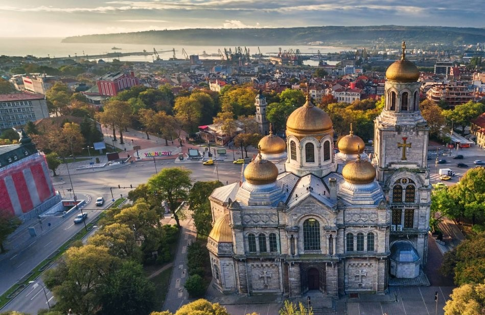
Burgas nabízí klidnější atmosféru než jiná bulharská letoviska. Pláže jsou široké, písečné a velmi příjemné. Moře je teplé a vhodné pro dlouhé koupání. Vstup do vody je pozvolný. Ideální pro rodiny s dětmi. Pláže nejsou tolik přeplněné. Atmosféra je pohodová a klidná. Skvělé místo pro odpočinek u moře.
od 14 990 Kč
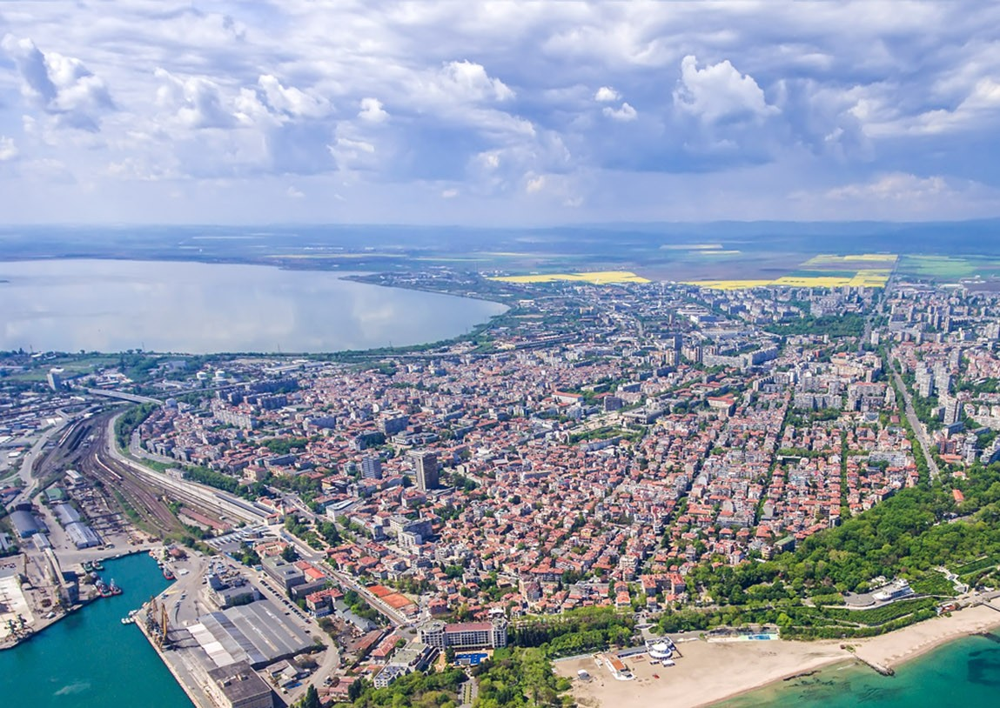
Tato oblast nabízí krásné dlouhé pláže s jemným pískem. Moře je zde teplé a klidné. Ideální podmínky pro koupání i relaxaci. Pláže jsou prostorné a méně přeplněné. Vhodné pro rodiny i páry. Najdeš zde i přírodní úseky pobřeží. Atmosféra je klidná a příjemná. Perfektní pro nenáročnou dovolenou u moře.
od 16 990 Kč
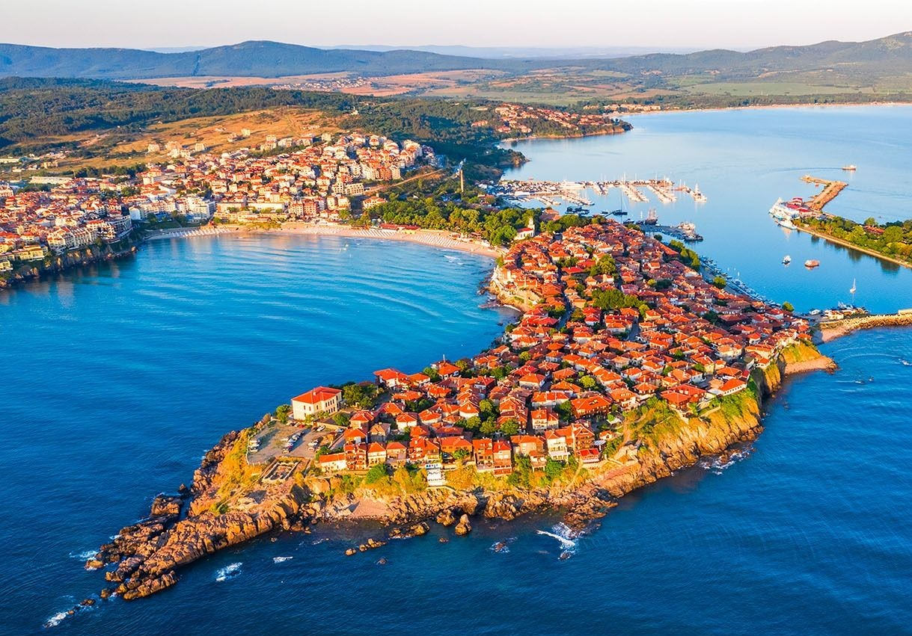
Řecko je známé svými antickými památkami, krásnými ostrovy a středomořskou kuchyní. Athény lákají na historické památky, včetně Akropole a Parthenonu. Santorini a Mykonos jsou ideální pro romantické dovolené a fotografování. Kréta a Rhodos nabízejí kombinaci krásných pláží a historických památek. Tradiční řecké vesnice mají malebné úzké uličky a bílou architekturu. Řecká kuchyně je plná čerstvých ryb, oliv, sýrů a bylinek. Národní parky a hory jsou ideální pro pěší turistiku a dobrodružství. Řecko je vhodné pro rodiny, páry i samostatné cestovatele. Místní festivaly a tradice přinášejí autentický zážitek. Pláže s tyrkysovou vodou jsou ideální pro relaxaci a vodní sporty. Řecko kombinuje historii, přírodu a pohostinnost místních obyvatel. Země nabízí nekonečné možnosti pro poznávání i odpočinek.
Heráklion nabízí příjemné pláže s čistým mořem. V okolí najdeš jak písečné, tak oblázkové pláže. Moře je teplé a ideální na koupání. Některé pláže mají větší vlny. Pobřeží nabízí krásné výhledy. Ideální i pro vodní sporty. Atmosféra je typicky řecká a uvolněná. Skvělé místo pro letní dovolenou.
od 29 990 Kč
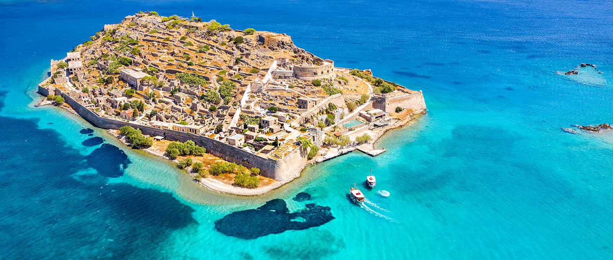
Rhodos je známý svými slunečnými plážemi a čistým mořem. Najdeš zde pláže pro klid i zábavu. Moře je ideální pro koupání i šnorchlování. Voda je průzračná a teplá. Pobřeží nabízí i větrnější místa pro sporty. Pláže jsou dobře dostupné. Atmosféra je živá a letní. Perfektní pro všechny typy cestovatelů.
od 24 990 Kč
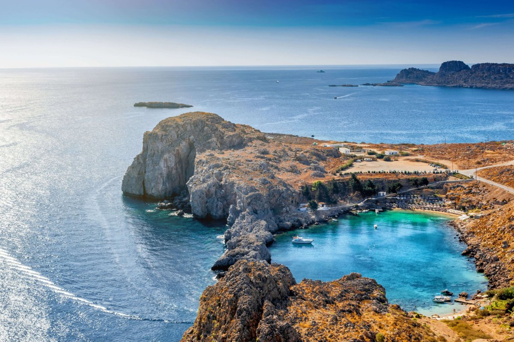
V okolí Thessaloniki najdeš krásné pláže s čistým mořem. Pláže jsou většinou písečné. Voda je teplá a příjemná. Ideální pro koupání i relax. Pobřeží nabízí dostatek prostoru. Atmosféra je klidnější než na ostrovech. Skvělé místo pro pohodovou dovolenou. Vhodné pro rodiny i páry.
od 21 990 Kč
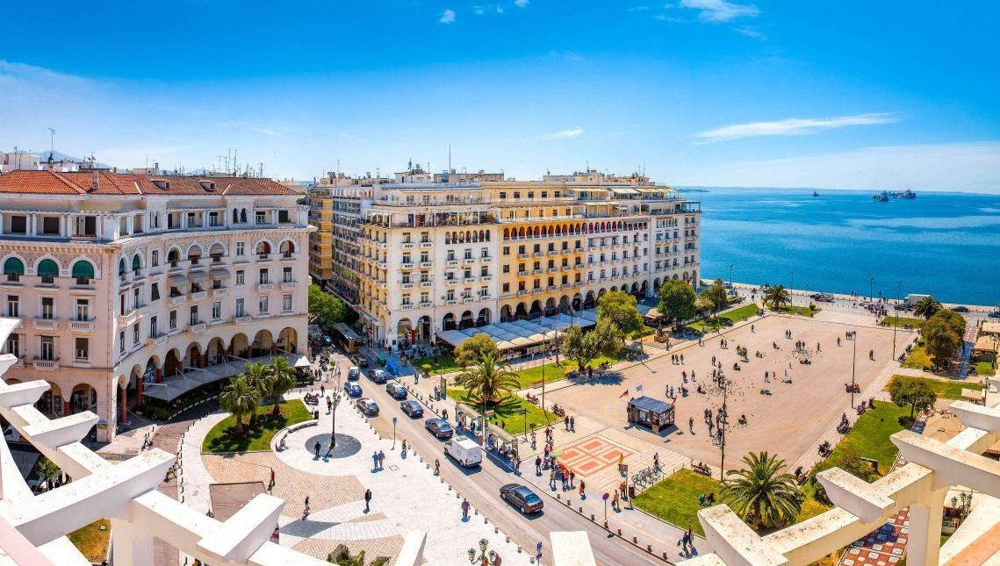
Tunisko nabízí exotickou kombinaci pláží, historie a pouštní krajiny. Středozemní pobřeží láká na slunečné pláže a moře. Mediny a historická města jako Tunis a Sousse připomínají bohatou minulost. Poušť Sahara je ideální pro dobrodružství, jízdu na velbloudech a kempování. Archeologická naleziště, například Kartágo, lákají milovníky historie. Tunisko má příjemné klima, vhodné pro celoroční cestování. Místní kuchyně nabízí kořeněná jídla, olivy, kuskus a čerstvé ryby. Trhy a bazary poskytují autentickou atmosféru a možnosti nákupů suvenýrů. Letoviska nabízejí komfortní hotely a vodní sporty. Tunisko je cenově dostupné a přívětivé pro rodiny i páry. Země kombinuje relaxaci na pláži, poznávání kultury a dobrodružství v poušti. Tunisko je skvělou volbou pro exotickou dovolenou s historickými a přírodními zážitky.
Sfax nabízí klidnější pobřeží bez velkých davů. Pláže jsou jednoduché, ale příjemné. Moře je teplé a vhodné pro koupání. Ideální pro nenáročnou dovolenou. Pobřeží má přirozený charakter. Atmosféra je klidná. Skvělé pro relax u vody. Méně turistické místo.
od 19 990 Kč
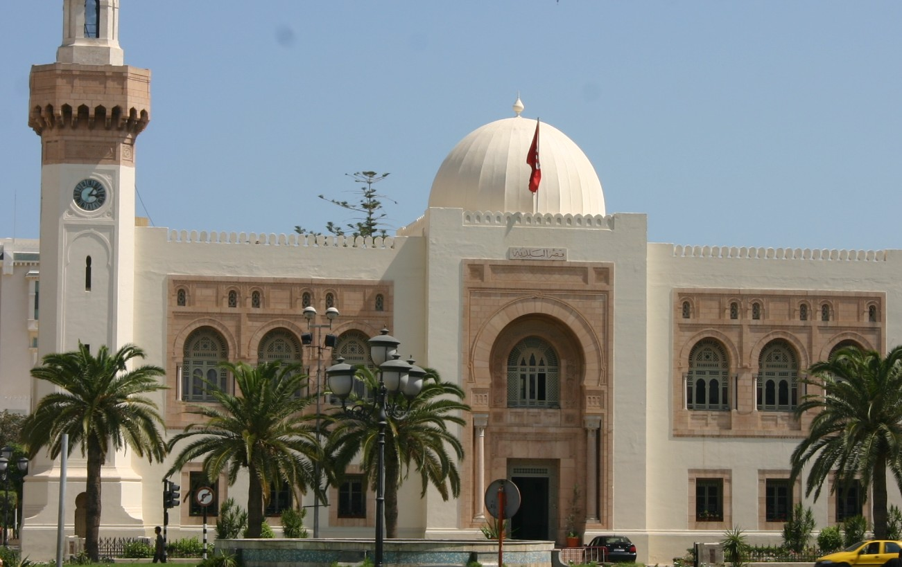
Djerba je známá svými dlouhými písečnými plážemi. Moře je teplé a klidné. Ideální pro koupání i odpočinek. Pláže mají jemný písek. Vstup do vody je pozvolný. Skvělé pro rodiny s dětmi. Atmosféra je velmi klidná. Perfektní na relax u moře.
od 21 990 Kč
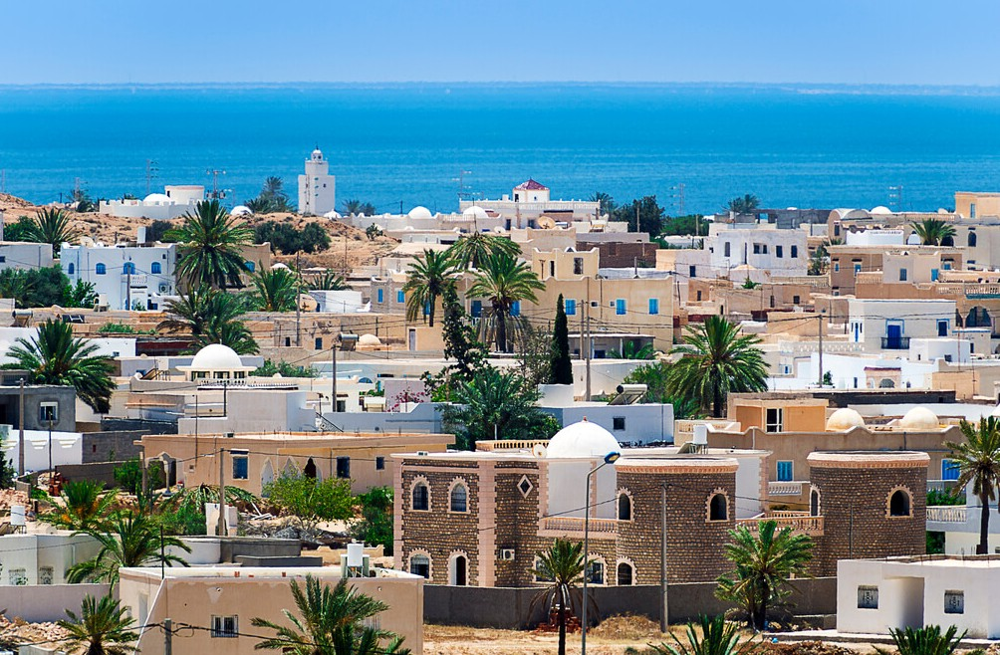
Zarzis nabízí klidné pláže s minimem turistů. Moře je teplé a čisté. Ideální pro odpočinek. Pláže jsou písečné a prostorné. Vhodné pro dlouhé procházky. Atmosféra je velmi klidná. Skvělé místo pro relax. Autentický zážitek u moře.
od 17 990 Kč
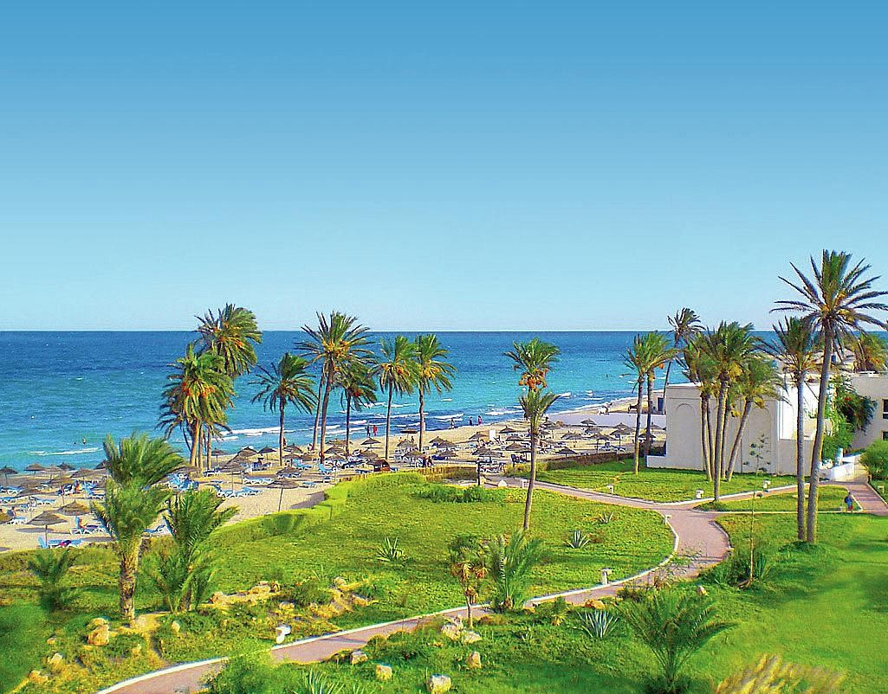
Egypt je ideální pro milovníky historie, slunce a potápění. Pyramidy v Gíze a Sfinga patří mezi nejznámější světové památky. Luxor a Karnak lákají na starověké chrámy a archeologická naleziště. Hurghada a Sharm El-Sheikh nabízejí krásné pláže a úžasné korálové útesy. Nilu lze poznat při plavbách lodí mezi historickými městy. Egyptská kuchyně je pestrá a aromatická, s využitím masa, rýže a koření. Místní trhy a bazary nabízejí autentický zážitek a možnost nákupů suvenýrů. Poušť a oázy poskytují jedinečné dobrodružství. Egypt je vhodný pro rodiny, páry i jednotlivce hledající historii i relaxaci. Země je cenově dostupná a poskytuje širokou nabídku hotelů. Historie, kultura a přírodní krásy činí Egypt fascinující destinací. Pobřeží Rudého moře je ideální pro vodní sporty a potápění.
Marsa Alam je ráj pro milovníky šnorchlování a potápění. Moře je extrémně čisté a plné života. Najdeš zde korálové útesy přímo u pobřeží. Voda je teplá po celý rok. Ideální pro objevování podmořského světa. Pláže jsou klidné a méně přeplněné. Atmosféra je relaxační. Perfektní pro klidnou dovolenou.
od 20 990 Kč
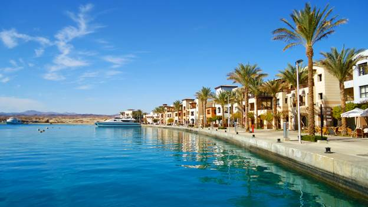
Hurghada nabízí dlouhé písečné pláže a teplé moře. Voda je klidná a ideální pro koupání. Skvělé podmínky pro šnorchlování. Pláže jsou dobře vybavené. Najdeš zde i vodní sporty. Atmosféra je živá a turistická. Ideální pro zábavu i relax. Perfektní letní destinace.
od 25 990 Kč
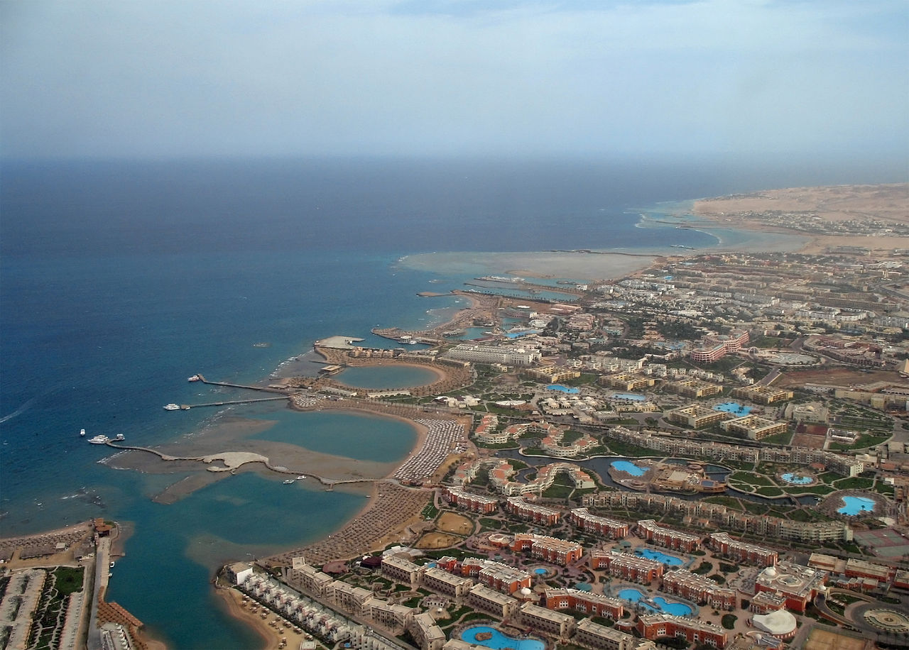
Safaga je klidnější alternativa k Hurghadě. Moře je čisté a ideální pro koupání. Pláže jsou méně přeplněné. Skvělé podmínky pro potápění. Voda je teplá a klidná. Atmosféra je velmi relaxační. Ideální pro odpočinek. Perfektní pro klidnou dovolenou.
od 19 990 Kč
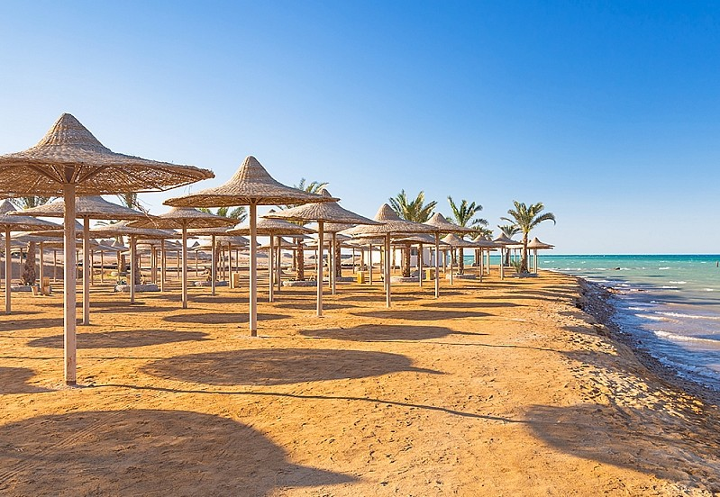
Kypr je ostrovem s příjemným středomořským klimatem a krásnými plážemi. Pafos je známý svými archeologickými památkami a malebným přístavem. Ayia Napa nabízí živou zábavu, pláže a vodní sporty. Limassol kombinuje moderní turistickou infrastrukturu s historickým centrem města. Kypr má bohatou historii, sahající až do starověku, což dokládají starobylé chrámy a památky. Tradiční vesnice s úzkými uličkami nabízejí autentickou atmosféru. Kyprská kuchyně je lahodná – olivy, halloumi, čerstvé ryby a tradiční meze. Národní parky a horské oblasti poskytují možnosti pěší turistiky a cyklovýletů. Kypr je bezpečný a přívětivý pro rodiny i páry. Moře je teplé a čisté, ideální pro koupání a potápění. Ostrov nabízí kombinaci relaxace, sportů a poznávání kultury. Kypr je ideální destinací pro všechny, kdo chtějí spojit přírodu, historii a pohodovou dovolenou.
Pafos nabízí krásné pobřeží s čistým mořem. Pláže jsou kombinací písku a kamenů. Voda je teplá a vhodná pro koupání. Ideální i pro šnorchlování. Pobřeží má krásné scenérie. Atmosféra je klidná. Skvělé pro relax. Perfektní letní destinace.
od 21 990 Kč
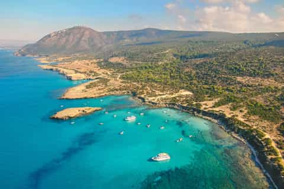
Larnaka je známá svými písečnými plážemi. Moře je klidné a teplé. Vstup do vody je pozvolný. Ideální pro rodiny. Pláže jsou dobře vybavené. Atmosféra je pohodová. Skvělé pro odpočinek. Příjemná letní destinace.
od 24 990 Kč
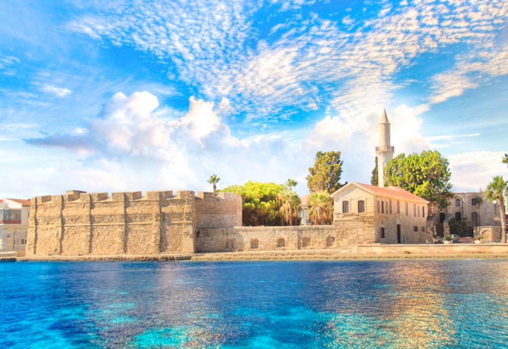
Lemesos nabízí dlouhé pláže s tmavším pískem. Moře je teplé a klidné. Ideální pro koupání i vodní sporty. Pláže jsou prostorné. Najdeš zde i plážové bary. Atmosféra je živá. Skvělé pro zábavu i relax. Oblíbené letovisko.
od 22 990 Kč
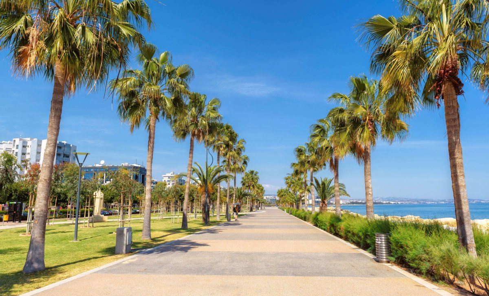
Turecko je zemí kontrastů, kde se střetává evropská a orientální kultura. Istanbul je pulzující metropolí, která nabízí historické památky, mešity a tradiční bazary. Antalya je známá svými plážemi, luxusními resorty a historickým starým městem. Kapadokie láká na unikátní skalní útvary a balonová dobrodružství při východu slunce. Turecká kuchyně je pestrá, s kebaby, kořeněnými pokrmy a sladkostmi jako baklava. Přírodní scenérie, včetně hor, jezer a termálních pramenů, nabízejí ideální podmínky pro aktivní turistiku. Pamukkale se proslavilo bílými travertinovými terasami a léčivými prameny. Turecko je vhodné pro rodiny, páry i dobrodružné cestovatele. Letoviska nabízejí širokou škálu sportů, od potápění po windsurfing. Historie a archeologická naleziště, jako Efes nebo Troja, lákají milovníky starověku. Turecko kombinuje relaxaci, poznávání kultury a zážitky v přírodě. Pohostinnost místních dělá cestování po zemi příjemným a autentickým. Turecko je destinace, která nabízí rozmanitost a nezapomenutelné zážitky.
Antalya nabízí nádherné pláže s čistým mořem. Najdeš zde písečné i oblázkové pláže. Voda je teplá a ideální pro koupání. Pláže jsou dobře vybavené. Skvělé podmínky pro vodní sporty. Atmosféra je živá a luxusní. Ideální pro letní dovolenou. Perfektní kombinace relaxu a zábavy.
od 17 990 Kč
Izmir nabízí příjemné pobřeží s čistým mořem. Pláže v okolí jsou klidné a pohodové. Voda je teplá a vhodná pro koupání. Ideální pro relax. Pobřeží má uvolněnou atmosféru. Méně turistické než jiná místa. Skvělé pro klidnou dovolenou. Příjemná letní destinace.
od 23 990 Kč
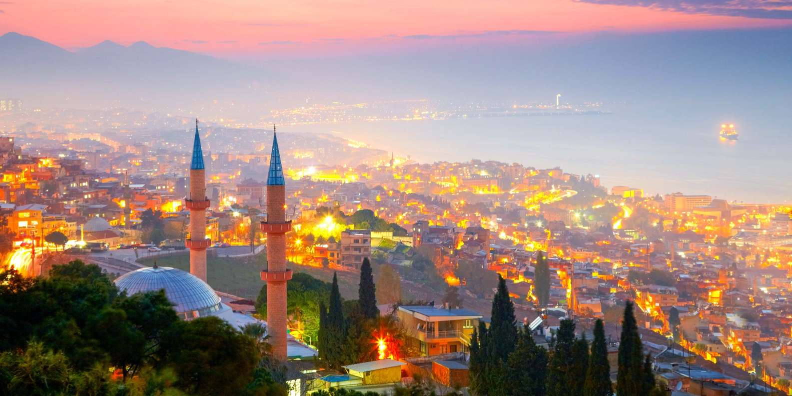
Alanya je známá svými dlouhými písečnými plážemi. Moře je teplé a velmi příjemné. Vstup do vody je pozvolný. Ideální pro rodiny. Pláže jsou dobře vybavené. Atmosféra je živá a zábavná. Najdeš zde i vodní sporty. Perfektní místo pro letní dovolenou.
od 15 990 Kč
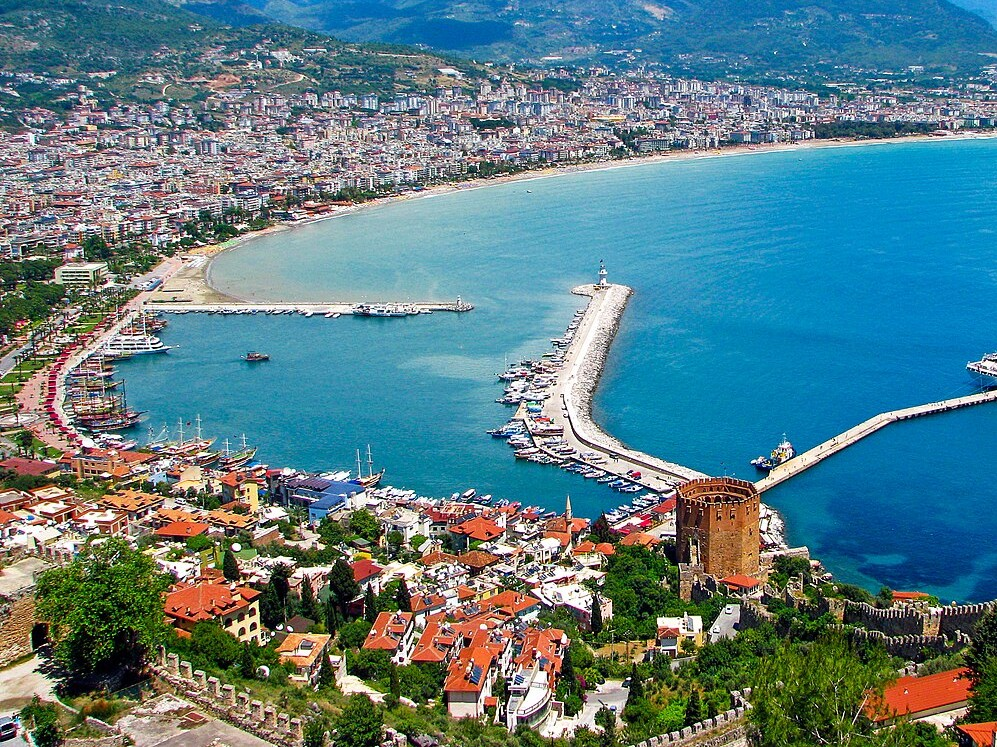
Spojené arabské emiráty jsou synonymem luxusu, moderní architektury a exotické pouště. Dubaj láká na ikonické mrakodrapy, například Burj Khalifa, a rozsáhlá nákupní centra. Abú Dhabí nabízí kulturní zážitky, včetně mešity Šejka Záída a moderních muzeí. Pláže u Perského zálivu jsou čisté a vhodné pro vodní sporty a relaxaci. Pouštní safari a jízda na velbloudech přinášejí dobrodružství mimo městský ruch. Kulturní festivaly, trhy a tradiční kuchyně ukazují autentickou arabskou atmosféru. Moderní resorty a hotely poskytují komfortní ubytování a luxusní služby. SAE jsou vhodné pro rodiny, páry i jednotlivce hledající zážitky i odpočinek. Moře je teplé a bezpečné pro plavání, potápění i další aktivity. Země kombinuje moderní svět s tradičními hodnotami a kulturními památkami. Architektura, obchod, zábava i příroda tvoří pestrou nabídku pro každého cestovatele. SAE je destinace, která nabízí kombinaci luxusu, dobrodružství a pohodové dovolené.